User Manual
A step-by-step guide to installing HumanReadTTS and using it to read your documents aloud, from your first download through to saving a chapter as an audio file. No technical background required.
Contents
1. Quick Start
If you want to hear something read aloud in the next two minutes, these three steps are all you need. The rest of the manual explains each part in more detail.
Download the app, open the file you downloaded, and drag the HumanReadTTS icon onto the Applications folder shown next to it. Full details, including the warning macOS shows the first time, are in Installing the App.
Drag a PDF, Word file, EPUB, Markdown file, or plain text file onto the HumanReadTTS window. You can also click Open in the top-left corner, or press Command + O.
Reading starts from the beginning. Press the space bar again to pause. To start somewhere else instead, double-click any word in the document and reading begins from there.
Everything happens on your Mac. Your documents are never uploaded anywhere, so you can read confidential drafts and unpublished papers without worrying about where the text goes.
2. Installing the App
HumanReadTTS runs on Macs with Apple Silicon (the M1, M2, M3, M4 chips and later) running macOS 15 or newer. If you bought your Mac in 2021 or later, it almost certainly qualifies. To check, click the Apple menu in the top-left of your screen and choose About This Mac.
The download button takes you to the releases page. Under the newest
version, click the file ending in .dmg. It will land in
your Downloads folder.
Double-click the downloaded .dmg file. A window opens
containing the HumanReadTTS app. Drag it into your
Applications folder — open a second Finder window
and drag it across, or drag it onto Applications in the Finder
sidebar.
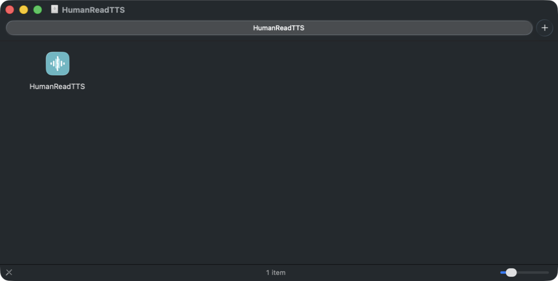
Go to your Applications folder, hold Control and click the HumanReadTTS icon, then choose Open from the menu that appears. A warning box appears saying the developer cannot be verified. Click Open again.
You only have to do the Control-click step once. After that, opening HumanReadTTS works like any other app. If you double-click it the very first time instead of Control-clicking, macOS refuses to open it at all and does not offer an Open button, which is why the extra step matters.
This warning appears because the app is not signed with a paid Apple developer certificate. It is not a sign that anything is wrong. The full source code is public, so anyone can check what the app does.
If the app still refuses to open
Open the Terminal app (find it with Spotlight by pressing Command + Space and typing "Terminal"), paste the line below, and press Return. It removes the quarantine flag macOS puts on downloaded files.
xattr -dr com.apple.quarantine /Applications/HumanReadTTS.app3. The First Launch
The first time you open HumanReadTTS, a short welcome tour explains the main parts of the window and offers to open a sample document so you can hear the app working straight away. You can close the tour at any point and reopen it later from the Help menu.
Once the tour is done you are looking at the main window. It has two parts: your document list on the left, and the document you are reading in the middle. Along the bottom sits the playback bar, which holds every control you need while listening.
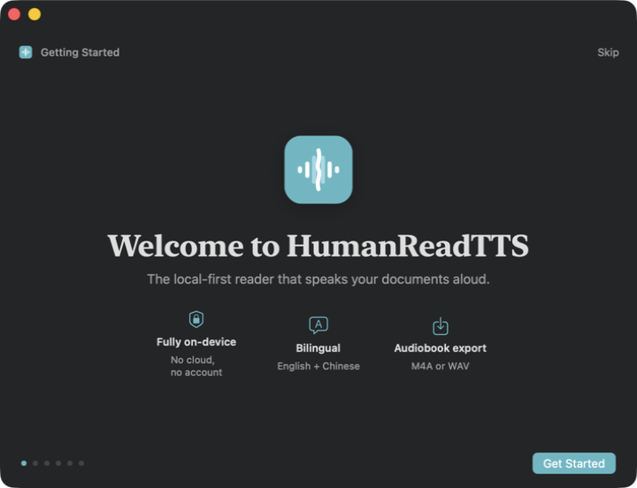
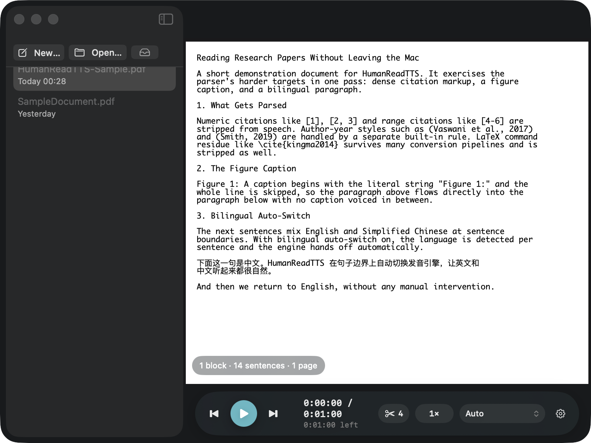
The app does not ask you to create an account or sign in, because there is no account system. Nothing you do is tied to a login.
4. Opening a Document
There are four ways to open something:
- Drag a file from Finder onto the HumanReadTTS window.
- Click Open at the top of the document list.
- Press Command + O.
- Control-click a file in Finder and choose Open With, then HumanReadTTS.
Everything you open is added to the list on the left, so you can jump back to it later without hunting through Finder.
Which file types work
| File type | What to expect |
|---|---|
| The best-supported format. Multi-column research papers are handled correctly, and citations and figure captions can be skipped automatically. | |
| Word (.docx) | Text and headings are read. Complex layouts and tracked changes may not appear as they do in Word. |
| EPUB | Ebooks are read chapter by chapter. |
| Markdown (.md) | Shown either as formatted text or as raw source, whichever you prefer. |
| Plain text (.txt) | Read as-is. |
| Images | PNG, JPEG, HEIC and TIFF files have their text recognised and read. See Reading Text in Images. |
5. The Playback Bar
The rounded bar along the bottom of the window holds every playback control. From left to right: jump to the previous sentence, play or pause, jump to the next sentence, how far through you are, how many pieces of text are being skipped, the reading speed, the current voice, and a settings button.

The time readout
The top line shows how far you are into the document and how long it is in total. The smaller line underneath shows how much is left. These estimates are based on your chosen speed and get more accurate as the app learns how quickly you actually listen.
The skip counter
The scissors icon shows how many pieces of text are currently being left out of the reading, such as citation numbers. Click it to see and change those rules. See Skipping Citations and Clutter.
The speed control
Shows the current speed, from a quarter of normal pace up to four times normal. Click it to pick a different speed, or nudge it with Command + ] to speed up and Command + [ to slow down.
The voice control
Shows which voice is speaking. Click it to switch voices without stopping. The app restarts the current sentence in the new voice so you do not miss anything.
If you make the window narrow, the playback bar hides its less important parts in order: first the time, then the voice name, then the speed. The play controls and the progress slider always stay visible.
6. Highlighting and Click-to-Read
As the app reads, the sentence being spoken is washed in a soft amber colour, and the exact word being spoken is picked out more brightly. The page scrolls to follow along.
To start reading from a specific place, double-click any word. Reading jumps there immediately. If you Control-click a word instead, a menu appears with Read from here and Read from here to end.
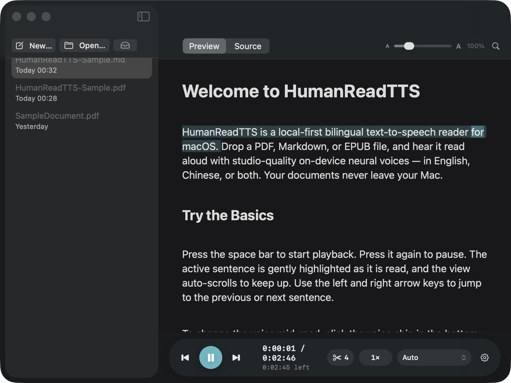
If you scroll away to look at something else, the app stops following the text and shows a button that takes you back to the sentence being read. Your place is never lost.
7. Picking Up Where You Left Off
Close the app in the middle of a document and reopen it later: you are returned to the sentence where you stopped. Press the space bar to carry on. This happens automatically for every document in your list.
8. Zoom, Fit and Search
For PDFs, zoom in and out with Command + + and Command + -. The app remembers the zoom level you chose for each document, the same way Preview does, so a dense paper stays enlarged next time you open it.
To fit the page back to the window, press Escape twice in quick succession. A single press is ignored on purpose, so you do not lose your zoom level by accident.
To find a word in the document, press Command + F. Move between matches with Command + G for the next one and Command + Shift + G for the previous. Press Escape to close the search bar.
9. Choosing a Voice
HumanReadTTS offers three kinds of voice. All of them run on your Mac, so none of your text is sent over the internet.
| Voice type | Quality | Download needed |
|---|---|---|
| System voices | Basic. These are the voices already built into macOS. | None. Available immediately. |
| Kokoro | Natural and expressive. 28 English voices. | About 650 MB, one time. |
| Qwen3-TTS | Natural, and handles English and Chinese equally well. 6 voices. | About 1 GB, one time. |
Change voice from the playback bar while reading, or from Settings → Playback. Switching mid-document is safe; the app restarts the current sentence in the new voice and offers an Undo button for a few seconds in case you preferred the old one.

If a downloaded voice fails for any reason, the app falls back to a system voice, changes the icon on the voice control, and shows a brief message. It heals itself as soon as the better voice works again, so reading never simply stops.
10. Downloading Better Voices
The natural-sounding voices are optional downloads, so the app itself stays small. To get them, open Settings with Command + , and choose the Models tab. Each voice pack has a Download button and a progress bar.

Download the voices once while you are on a good connection. After that they work entirely offline, including on a plane or a train.
11. English and Chinese Together
If a document mixes English and Chinese, HumanReadTTS detects the language of each sentence and switches voices automatically as it reads. You do not have to do anything, and it is switched on by default.
For this to sound natural in both languages, use one of the Qwen3-TTS voices, which are designed to handle both. See Downloading Better Voices.
12. Fixing Mispronounced Words
Technical terms, surnames and abbreviations sometimes come out wrong. You can teach the app how to say them. Open Settings → Pronunciation, click the add button, type the word as it is written, then type it again spelled the way it should sound.
Your corrections apply to every voice and every document from then on.

13. Making Text Easier to Read
Open Settings → Reading to change how the text looks. Every change previews live, so you can see the effect before you commit to it.
- Typeface — choose a serif, sans-serif, or monospaced face. Two typefaces designed for easier reading are included: OpenDyslexic and Atkinson Hyperlegible.
- Text size, line spacing and letter spacing — adjust each independently until long passages feel comfortable.
- Leading-bold reading — puts the first part of each word in bold, which some readers find helps the eye move along the line.
- Highlight colour — an alternative palette is available that stays distinguishable for the most common forms of colour blindness.
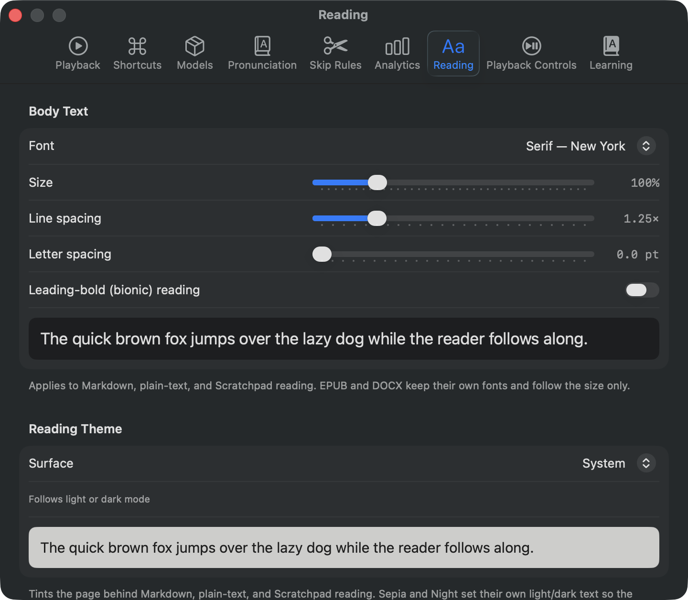
14. Page Colours and Line Focus
The same Reading settings offer three page surfaces:
- System — follows whether your Mac is in light or dark mode.
- Sepia — a warm, paper-like background for daytime reading.
- Night — light text on a dim background, for reading in the dark.
There is also a line-focus ruler. When it is switched on, everything except the line under your pointer is dimmed, which helps if you lose your place easily on dense pages.
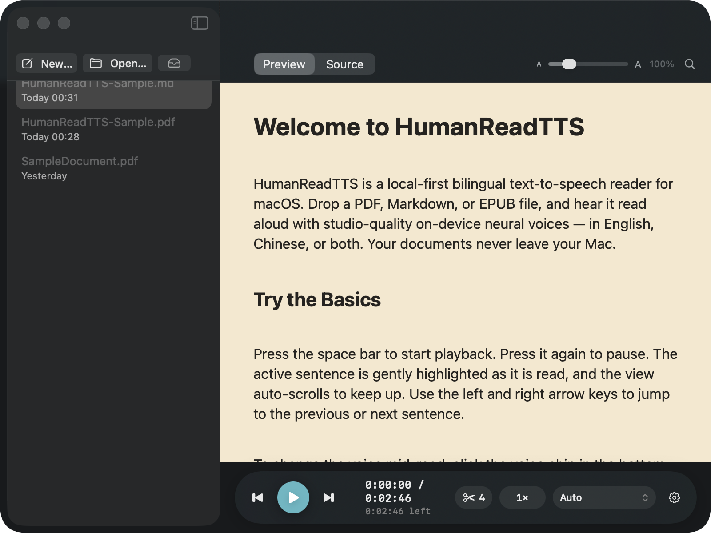
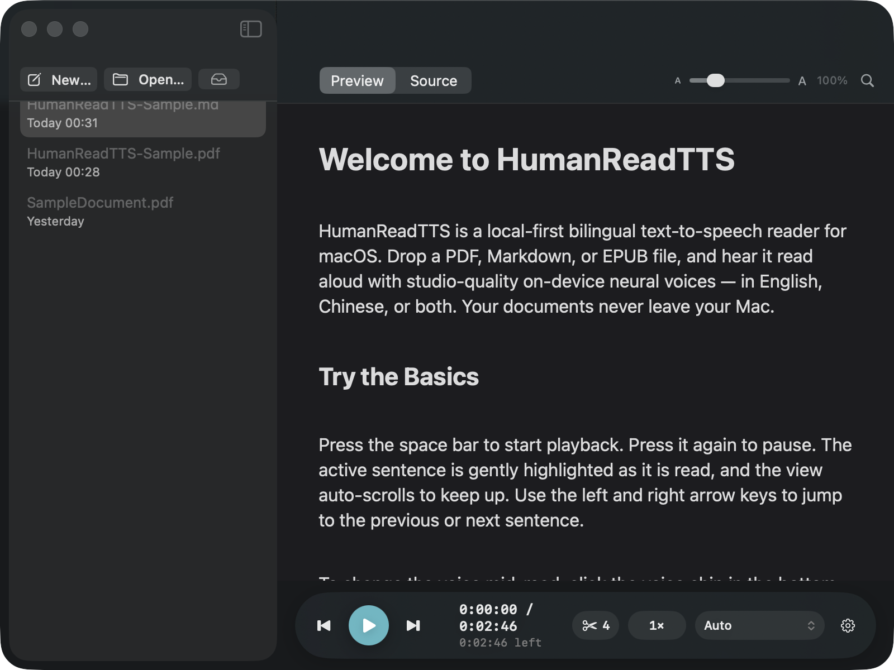
15. Translating a Word
While reading, hold Option and double-click any word. A small panel opens with the translation, a button to hear it spoken, and a button to save it to your vocabulary list along with the sentence it came from. You can also Control-click a word and choose Translate.
Translation runs on your Mac using Apple's built-in translation. The first time you use a particular pair of languages, macOS may ask to download that language once.
Turn the feature on or off, and choose which language to translate into, in Settings → Learning.
16. Your Vocabulary List
Every word you save appears in Settings → Learning, together with its translation and the sentence you found it in. Remove single entries with the button beside them, or clear the whole list.
Click Export to Anki (CSV) to save the list as a file you can import into Anki or any flashcard app. The columns are already laid out as front, back, context and language, so no column matching is needed on import.
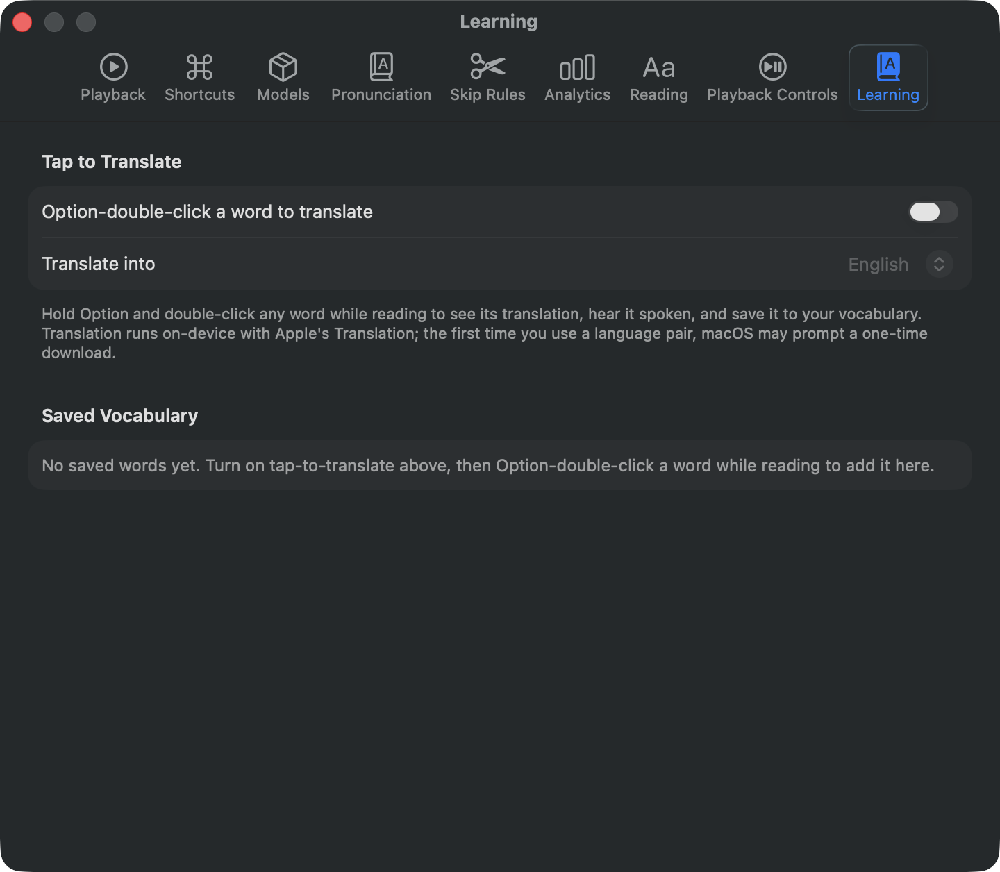
17. Reading Text in Images
Open a picture the same way you would open a document, by dragging it onto the window or using Open. HumanReadTTS recognises the text inside it and reads it aloud like any other file. It works out the correct reading order, so a scanned page with two columns or a heading above the body text is read in the order a person would read it.
Choose which languages to recognise in Settings → Shortcuts.
Text recognition works on image files that you open. Reading text directly from a screenshot on the clipboard was removed in this version.
18. Reading From Any App
You do not have to open a file to hear something read. Select text in any app, such as Safari, Mail or Notes, and press Command + Shift + E. HumanReadTTS reads the selection aloud. If nothing is selected it falls back to whatever you last copied.
You can change that key combination in Settings → Shortcuts. The same tab chooses which languages are recognised in images.
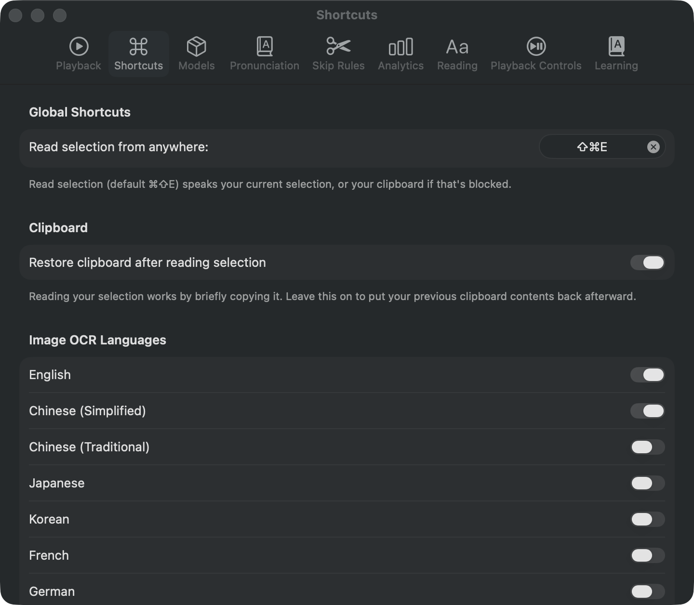
There is also a menu-bar icon that appears while something is playing, giving you play, pause and skip without switching back to the main window. And in most apps you can select text, open the app's Services menu, and choose Read with HumanReadTTS.
19. Media Keys and Sleep Timer
Whatever you are reading appears in Control Center and in the Now Playing widget, just like music. The play, previous and next keys on your keyboard control it, and so do the controls on AirPods and most headphones.
In Settings → Playback Controls you will also find:
- Sleep timer — stops reading after a set number of minutes, or at the end of the current sentence.
- Reading queue — line up several documents so the next one starts automatically when the current one finishes.
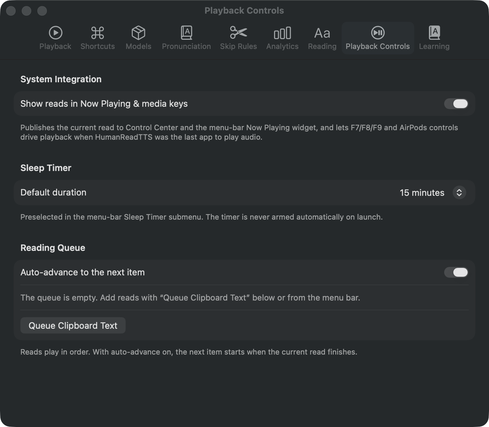
20. Skipping Citations and Clutter
Research papers are full of things that are useful on the page but irritating to listen to, such as citation numbers in square brackets. HumanReadTTS removes them before reading. Three rules are switched on from the start:
- Numbered citations, such as
[12]or[12, 13] - LaTeX commands left over from typesetting, such as
\cite{...} - Inline citation markers, such as
cite:smith2019
You can add your own in Settings → Skip Rules. As you type a rule, a sample sentence shows you exactly what would be removed, so you can check it before switching it on. Changes take effect at the next sentence, without stopping playback.

The scissors number on the playback bar tells you how many rules are active. If a document sounds like it is missing words, check there first.
21. Keyboard Shortcuts
These work while the HumanReadTTS window is in front:
| Keys | What it does |
|---|---|
| Space | Play or pause |
| Left / Right | Previous or next sentence |
| Command + ] / [ | Speed up or slow down |
| Command + O | Open a file |
| Command + F | Find in document |
| Command + G | Next search match |
| Command + + / - | Zoom in or out |
| Escape twice | Fit the page to the window |
| Command + Shift + E | Save as an audio file |
| Command + Shift + J | Show the export list |
| Command + , | Open Settings |
This one works everywhere, in any app:
| Keys | What it does |
|---|---|
| Command + Shift + E | Read the text you have selected in whichever app you are using |
The same combination appears in both tables. Inside HumanReadTTS it saves an audio file; in any other app it reads your selection. You can change the global one in Settings → Shortcuts if you would rather they were different.
22. Saving as an Audio File
To listen later on a phone or a music player, turn a document into an audio file. Choose File → Export Audiobook, or press Command + Shift + E. In the save window, pick a format:
- M4A — smaller files, plays on almost anything. Use this unless you have a reason not to.
- WAV — uncompressed and much larger. Useful if you plan to edit the audio or convert it yourself.
Exporting happens in the background, so you can carry on reading. Press Command + Shift + J to see the list of exports, each with its own progress bar, a button to show the file in Finder, and a button to play it.
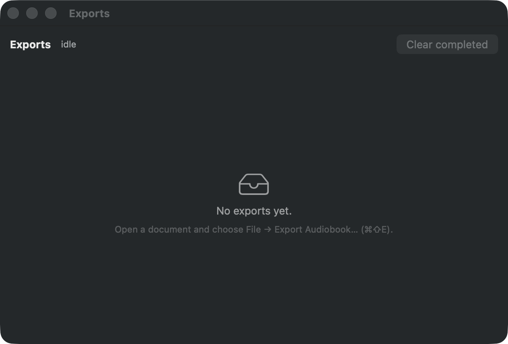
23. Questions and Answers
24. Glossary
- Apple Silicon
- The chips Apple has used in Macs since late 2020, named M1, M2, M3, M4 and so on. Check yours under the Apple menu, in About This Mac.
- DMG
- The file format Mac apps are usually distributed in. Double-clicking one opens a window you drag the app out of.
- Gatekeeper
- The macOS feature that checks downloaded apps and shows the warning about unverified developers.
- Text recognition
- Reading the letters out of a picture of text, so a scan or a photograph can be treated like a normal document. Often called OCR.
- Skip rule
- A pattern describing text that should be left out when reading aloud, such as citation numbers.
- Voice pack
- An optional download containing the natural-sounding voices. Once downloaded it works offline.
25. Privacy
HumanReadTTS has no servers. There is no account, no sign-in, and no analytics sent anywhere.
- Your documents stay on your Mac and are never uploaded.
- Reading, translation and text recognition all run on the device.
- The app connects to the internet only when you ask it to download a voice pack.
- Reading statistics, used to estimate how long a document will take, are stored on your Mac. You can switch them off in Settings → Analytics.